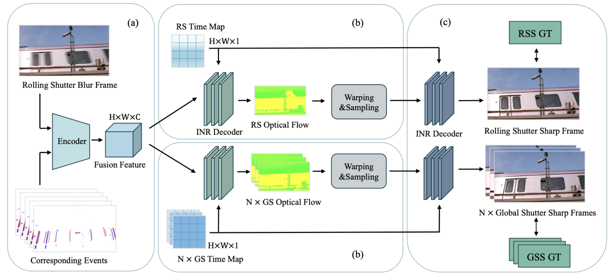

EMARS: Event-based Motion-Aware Correction, Deblurring and Interpolation of Rolling Shutter Images
IEEE ICIP 2026
†Keio University ††NEC
{hwx2955, bohanhuang07}@keio.jp, {s-namiki, yogino, t-toizumi-ct, ito-atsushi}@nec.com, aoki@elec.keio.ac.jp

Abstract
RS-CMOS sensors suffer from distortions and blur, which event-based Implicit Neural Representations (INR) often fail to resolve due to motion information loss. We propose a flow-centric unified framework that explicitly utilizes time-conditional optical flow as the primary kinematic constraint. By integrating a Flow-Constrained INR, our model ensures physically consistent motion trajectories for simultaneous RS correction, deblurring, and arbitrary-rate interpolation. Experiments demonstrate that our method achieves state-of-the-art performance across all benchmarks.